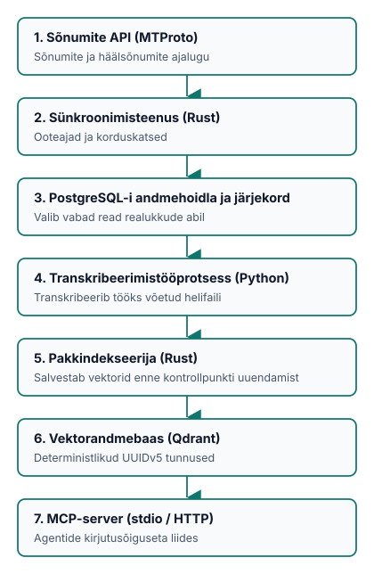

Sõnumiarhiiv ja semantiline otsing
Leida privaatsest sõnumiarhiivist teksti ja transkribeeritud heli tähenduse järgi.
Iseseisev isiklik projekt. Skeem kirjeldab tarkvarakomponente ning on koostatud näidissõnumite ja kontoandmeteta.
Tehnilised üksikasjad
- Projekti taust
- Isiklik projekt eraldab sõnumite impordi, transkribeerimise ja indekseerimise, et iga sammu saaks tõrke korral korrata.
- Arhitektuur
- Rusti teenus loeb sõnumeid MTProto kaudu. PostgreSQL talletab sõnumid ja transkribeerimistööd. Pythoni tööprotsess käivitab Whisperi ning Rusti indekseerija salvestab tekstivektorid Qdranti. Otsing on kättesaadav MCP-liidese kaudu.
- Tehnilised väljakutsed
- Samaaegselt töötavad protsessid võivad jõuda töödeni, mille teine protsess on juba võtnud.
- Vektorandmebaas ja indekseerimise kontrollpunkt kuuluvad eri süsteemidesse.
- Arhitektuuriotsused
- PostgreSQL-i FOR UPDATE SKIP LOCKED kasutab realukke ja laseb tööprotsessidel juba lukustatud read vahele jätta.
- Iga vektori lisamine või uuendamine kasutab deterministlikku UUIDv5-tunnust.
- Indekseerimise kontrollpunkt liigub edasi pärast vektori edukat kirjutamist.
- Töökindluse kaalutlused
- Korduskatse võib kirjutada uuesti sama vektoritunnuse alla. Muude kõrvalmõjude kordamise vältimiseks on vaja eraldi lahendust.
- Etappide vahelise katkestuse korral võib osa tööst vajada kordamist. Edenemine salvestatakse pärast iga lõpule viidud etappi.
- Projekti funktsioonid
- Ühendab sõnumite ja transkriptsioonide otsingu ühes MCP-liideses.
Tehnoloogiad
- Rust
- Python
- MTProto
- PostgreSQL
- Whisper
- Qdrant
- MCP
